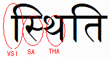

Request for feedback: Usefulness of ::first-letter in non-Latin scripts
Posted on Fri 20 Jan 2006 tagged as layout, web
The
W3C i18n Working Group would like to hear from you if you have some
knowledge/thoughts in this area. We would like to gather information
about the usefulness, in general, of the ::first-letter pseudo-element
in non-Latin scripts, and any particular issues or differences arising
from the different characteristics of the scripts.Please send your
comments to www-international @ w3.org
Archive and subscription:
http://lists.w3.org/Archives/Public/www-international/The latest working draft of CSS3 Selectors proposes the ::first-letter pseudo-element.
See http://www.w3.org/TR/2005/WD-css3-selectors-20051215/#first-letter
The ::first-letter pseudo-element represents the first letter of the
first line of a block, if it is not preceded by any other content (such
as images or inline tables) on its line.
It allows that first letter to be styled individually, without markup. It may be used for “initial caps” and “drop caps”, which are common typographical effects in text in Latin script.
We commented to the CSS Working Group that they need to define
‘letter’ more carefully, and proposed that they specify that ‘letter’
equates to ‘default grapheme cluster’, as described in the Unicode
Standard Annex #29.
See http://www.unicode.org/reports/tr29/#Grapheme_Cluster_Boundaries
(A rough and ready explanation of this is that base characters and any following combining characters are styled together. So
0065: e LATIN SMALL LETTER E + 0301: ́ COMBINING ACUTE ACCENT
would be handled as a single letter.)
We also suggested that implementors should then be encouraged to
provide tailored algorithms on a per language basis to cope with
anomolies, particularly such as may occur in non-Latin scripts.
Here are some initial questions:
[1] Are there scripts that would never use this approach?
[2] We mention ‘initial caps’ and ‘drop caps’ above. What
other types of styling would be commonly applied in other scripts if
this feature were available?
[3] What script features would cause difficulties, eg
syllabic groupings (see the example of indic script example below),
ligatures, cursive text (eg. Arabic, Urdu, etc.), and how would the
script normally deal with them?
Please send your comments to www-international @ w3.org
Archive: http://lists.w3.org/Archives/Public/www-international/
————
What follows are some examples of questions that spring to mind.
SYLLABIC INDIC SCRIPTS
In the Hindi word स्थिति (‘sthiti’) the sequence of characters in the first syllable is as follows in memory:
0938: स DEVANAGARI LETTER SA
094D: ् DEVANAGARI SIGN VIRAMA
0925: थ DEVANAGARI LETTER THA
093F: ि DEVANAGARI VOWEL SIGN I
The displayed text, however, is 
Note how the vowel sign appears to the left of the first character, not the third.
The default grapheme clusters here are, I believe, 0938+094D, then each of the following two characters.
Would Devanagari-based languages use special styling for initial
syllables? If so, would they actually apply the styling to the vowel
sign alone, or to the whole syllable?
LIGATURES
If a script styles the ‘first letter’, but that letter is part of a
ligature (ie. a single glyph representing more than one underlying
character), would it be ok to split the ligature, or should the other
characters that compose the ligature also be styled?
CURSIVE SCRIPTS
Since Arabic and Mongolian letters in a word are normally joined, has first letter styling been used at all in these scripts?
CHINESE, JAPANESE, KOREAN
Do languages using these scripts do first letter styling?
RUSSIAN, GREEK, ARMENIAN, etc.
Is first letter styling common practise in these scripts too?